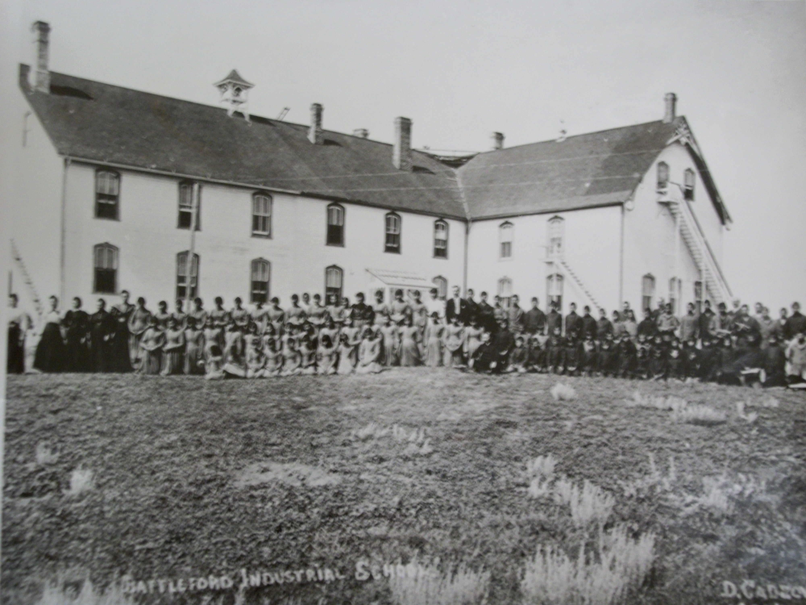

Residential Schools
While negotiating Treaty 6, the First Nations wanted their people to become educated with the intention of having schools on their reserves. Nicholas Davin authored a report to the Canadian government in 1879 recommending residential schools be established as a cost effective approach to speedily assimilate First Nations children modeled after American industrial schools. John A MacDonald agreed and said:
When the school is on the reserve, the child lives with its parents, who are savages, and though he may learn to read and write, his habits and training mode of thought are Indian. He is simply a savage who can read and write. It has been strongly impressed upon myself, as head of the Department, that Indian children should be withdrawn as much as possible from the parental influence, and the only way to do that would be to put them in central training industrial schools where they will acquire the habits and modes of thought of white men (Miller 40).
Residential schools opened in Saskatchewan in 1883 and 1884 to Qu’Appelle, High River, and Battleford (Office of the Treaty Commisioner, Treaty Essential Learnings: We are all Treaty People 22). The goals of the schools were to “assimilate and civilize” children so that they could live amongst the rest of Canadian society. The government paid for the operation of the schools but the Catholic, Anglican, United, and Presbyterian churches ran the schools daily operations. Most First Nations children were forced to attend these schools, at times children were taken from their homes and parents were helpless as it was against the law not to let them go.

The schools had these objectives in common:
The residential schools promoted European values and if the children did not adhere to these teachings, they faced awful consequences. It is common knowledge that physical, mental, emotional, spiritual, and sexual abuse took place at the residential schools. Children were not allowed to see their families during the school year, and some got to visit their families during the summer months. The schools isolated children from their parents and extended families to the point that they did not know one another. And as a result, their language, culture, identity, and pride were eliminated from them. Not all students had negative experiences, but most children did.
There were approximately 22 residential schools in Saskatchewan, all residential schools were eventually shut down with the last one in 1996 at Gordon’s First Nation. The era of residential schools has left a lasting legacy for First Nations to rebuild their culture and identity. It will take generations before this will happen. In the 1990’s, the churches and federal government publicly apologized for the residential schools. Although, First Nations were subjected to such inhumane treatment to eradicate the “Indian” from them, the First Nations together have survived and is in the process of healing and rejuvenation of their cultures and practices.